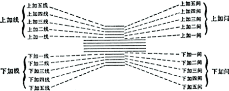

2013-03-27
吉他落下有不少日子了，这文章给了我新的动力， http://www.guokr.com/article/436846/ 再者今天的心情又一次在谷底，无处 发泄，很多东西都不能永久，只有自己的技能才是永远属于自己的。今天开始记 录学习吉他的过程。
五线谱
http://big5.ccnt.com.cn/show/yykt/ketang.htm?file=5-1
记谱时，音符都会刻画在一条线上或者两条线中间的空间上。而这些线及间由下 而上命名的，最下面的是第一线，最上面的是第五线；同样，第一、二 线之间为第一间，四、五线之间为第四间。在这五条线之间，可以记下 十一个音。
如果要在五线谱上记载位于下一线以下或上一线以上的音时，就必须在五线的上 下，加上一些临时短线。这种短线就称为加线(Ledger lines)，由加线产生的间， 就称为加间(Ledger spaces)。

空弦所在的位置
- 第六弦：下加四间 E
- 第五弦：下加二线 A
- 第四弦：下加一间 D
- 第三弦：第二线 G
- 第二弦：第三线 B
- 第一弦：第四间 E
练习
从头开始做了一些节奏和右手练习
倪本初老师的小课堂视频，记录于此： http://www.youku.com/playlist_show/id_18762501.html
2013-03-29
继续认谱和节奏，跟对节奏非常困难。
如何持琴
- 椅子高度让膝盖弯曲角度90度，垫高左腿，找重心
- 三点来固定琴，左腿，右腿，右手肘（视频中可以用左右腿就让琴保持平衡）
- 右腿是托住琴，不是夹
- 三点固定后，琴会胸口靠，琴面向上
- 不要为了看指板而导致身体前倾
- 琴面应该偏向右前方
2013-03-31
装了 GP6
还是没法找到一个一大块的时间进行系统的练习。
2013-05-14
看完Introduction to Guitar的 第一课，感觉还是比较简单的。又有一个多月停下系统练习，当作恢复练习前的 热身吧。
2013-05-19
2013-05-25
换了达达里奥的EL46，全面清理了下吉他。
松弦的时候发现琴颈的开裂很严重，刚好是紧绷的弦把它拉住
三品打品还是很严重，仔细观察发现品丝都被打磨过的感觉。
有时间看看能不能改善打品的情况： http://v.youku.com/v_show/id_XMzYxOTYwMzEy.html
2013-08-12
音组，方便称呼绝对音值。由音组由高到低排列分别是：
...
小字三组：c^3 ... b^3
小字二组：c^2 ... b^2
小字一组：c^1 d^1 e^1 f^1 g^1 a^1 b^1
小字组: c d e f g a b
大字组: C D E F G A B
大字一组: C_1 ... B_1
....
a^1 就是标准音，c^1 就是中央 C，吉他的六弦分别是 E A d g b e^1
2013-08-13
看了一下论坛积累下来的贴
youku 有个卡尔卡西的演示视频 http://v.youku.com/v_show/id_XNTI5Nzg5MDE2.html
做了预备练习的前三组
2013-08-14
看了倪本初老师的第二课，培养良好的左手手型。提到一个塔雷加的左手练习。
a c^1 d^1# f# e g a# c^1# e^1 g^1
做了预备练习的到第七组
五线谱识别慢，经常跟丢节奏。
2013-08-15
倪本初老师的第三课，把位的概念。
把位，就是食指所在指板的位置。如食指在第一品，其他三指依次在，二， 三，四品，便叫做第一把位。如果小指按到第五品，便叫做扩张，扩张很不舒 服，按弦的时候尽量做到不扩张。
时间不够，练了预备练习七，八组。
2013-08-17
做了塔雷加的左手练习，预备练习的九，十，十一。防止手生。
2013年08月18日
塔雷加的左手练习，预备练习做到十四。剪了指甲，左手的食指剪的有点过了。
2013-09-19
泛音调弦法，其主要是利用相临琴弦上不同把位相同音高的泛音来实现调弦。下面给出了如下对应关系：
6弦5品 = 5弦7品
5弦5品 = 4弦7品
4弦5品 = 3弦7品
2弦5品 = 1弦7品
5弦7品 = 1弦空弦
6弦5品 = 1弦空弦
泛音在声学和音乐中，指一个声音中除了基频外其他频率的音。 百度百科中说，除了发音体整体振动产生的最低的音是基音，以基音 为标准，其余1/2、1/3、1/4等各部分也是同时振动，是泛音。不知是否整数整 数倍的频率才可称为泛音。还发现泛音是影响音色的一个核心因素。
2013-11-05
没有时间练吉他。
Pumping.Nylon 只有89页，讲的都是些实际的技巧。
Carcassi 练习曲，非常可怕
初期目的，基础的音乐概念。识谱。简单的曲子。
2014-01-13
整理一份基础的知识架构，Guitar Note